Vježba 2
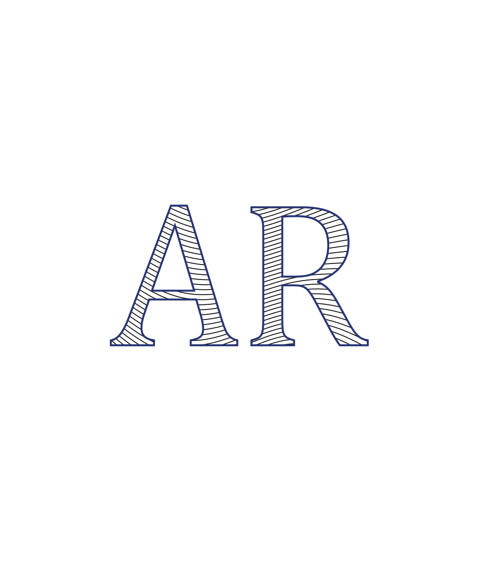 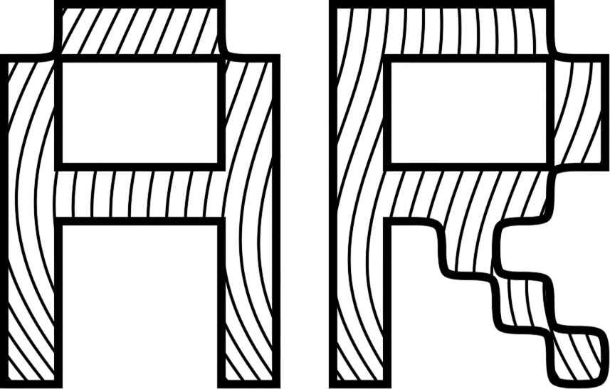U ovoj vježbi koristio sam vlastiti font te interpolaciju između krivulja u Inkscape-u kako bih napravio slova s uzorcima.
Vježba 3
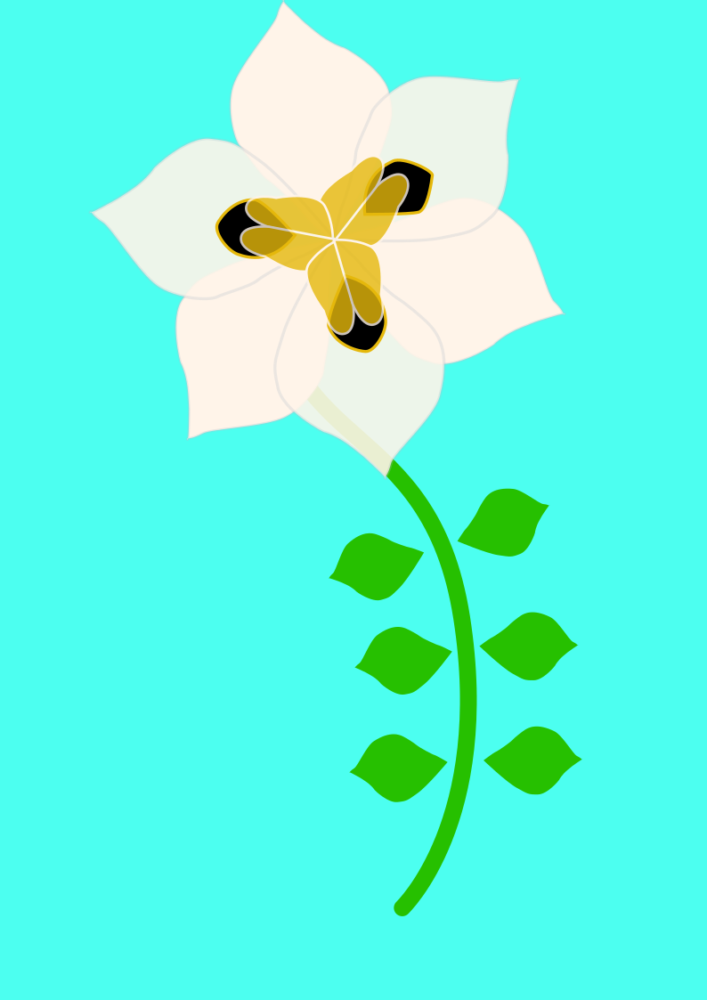 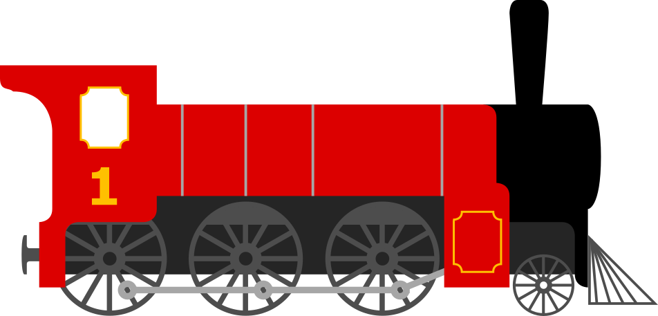Cvijet i lokomotiva koje sam radio u Inkscape-u korištenjem swatch boja i pen alata za crtanje krivulja i ravnih linija.
Vježba 4
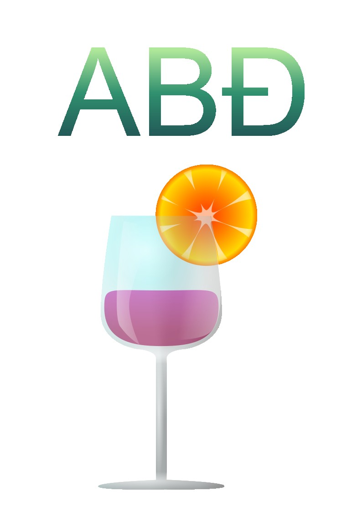 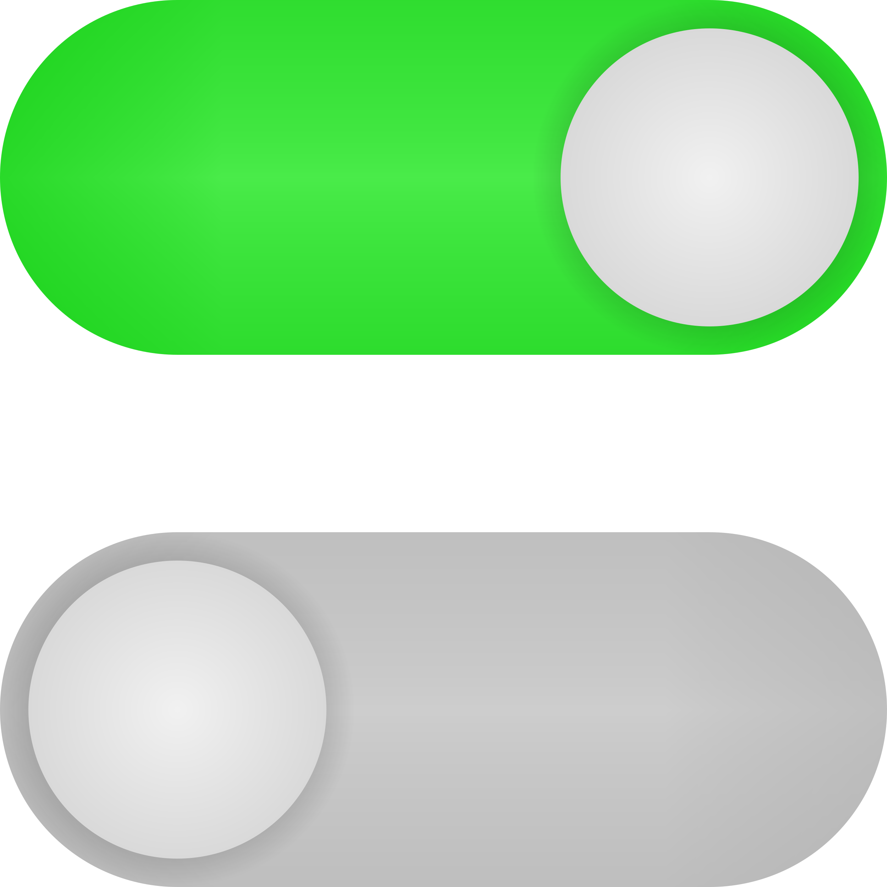Lijevo je reklama za piće, a desno su klizači koji se mogu koristiti kao gumbi u UI dizajnu
U ovoj vježbi koristio sam metode spajanja i oduzimanja oblika u Inkscape-u kako bih nacrtao složene objekte te sam aplicirao različite vrste gradacija od više boja.
Projektni zadatak 1
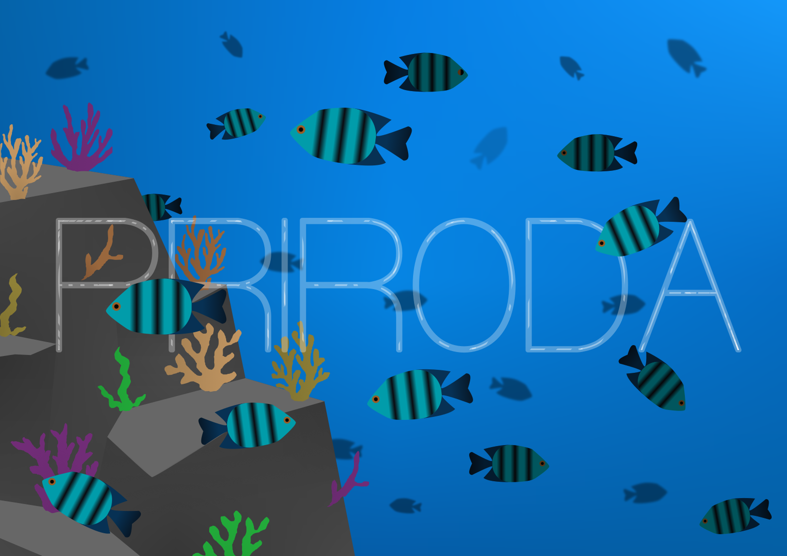Ovo je projektni zadatak vektorske grafike u kojoj sam koristio sve tehnike koje sam koristio u prethodnim vježbama vektorske grafike.
Ilustracija je rekreacija fotografije pod morem.
Piksel grafika
Vježba 5
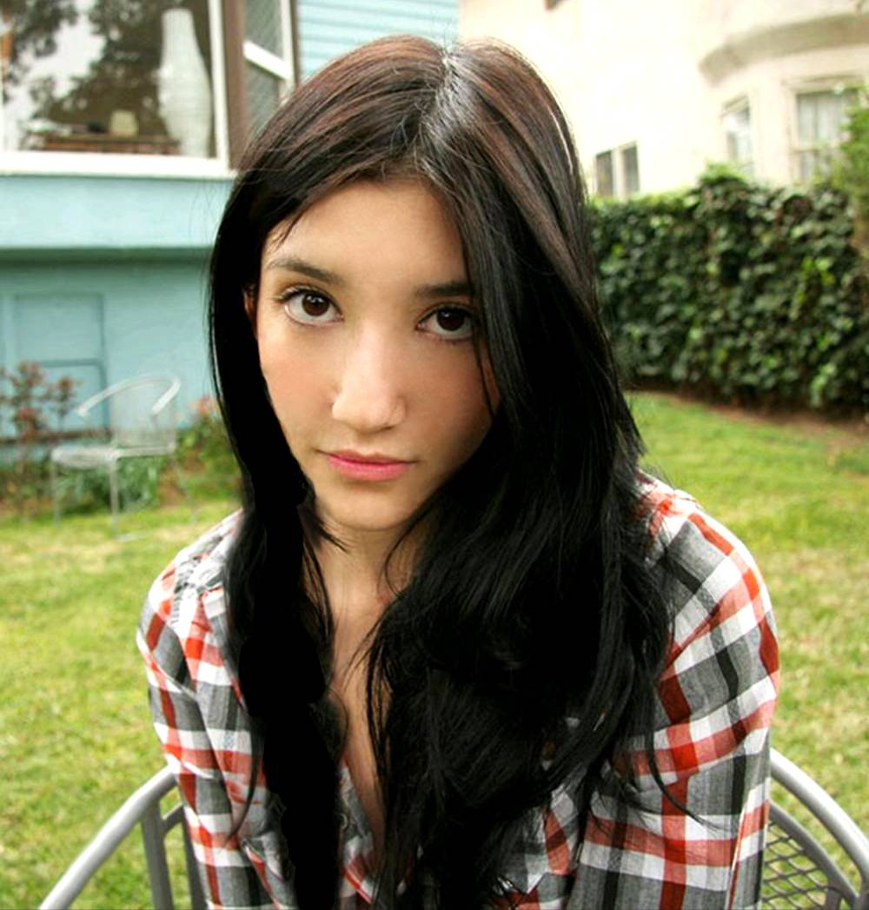 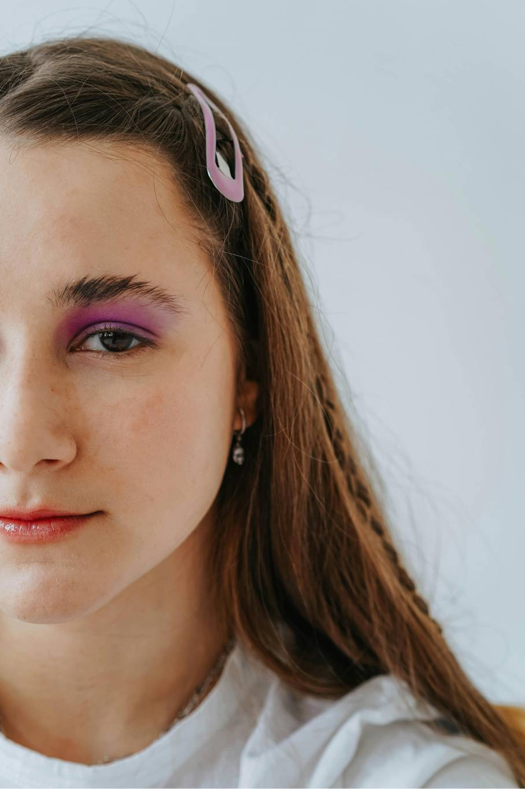U ovoj vježbi vježbao sam metode retuširanja i kloniranja u Photopea-u. Retuširao sam neželjene djelove slike kao što su fleke i nesavršenosti kože.
U ovim slikama uklanjene su fleke i pjege na osobama. Na lijevoj slici klonirao sam pojedine djelove frizure osobe.
Vježba 6
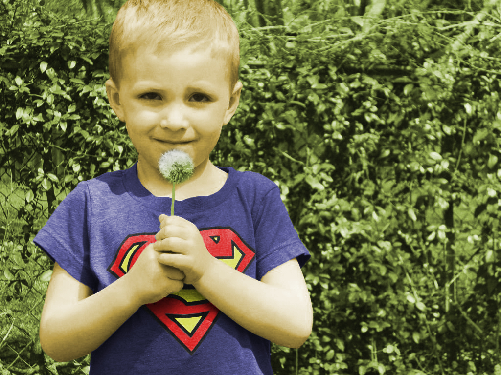 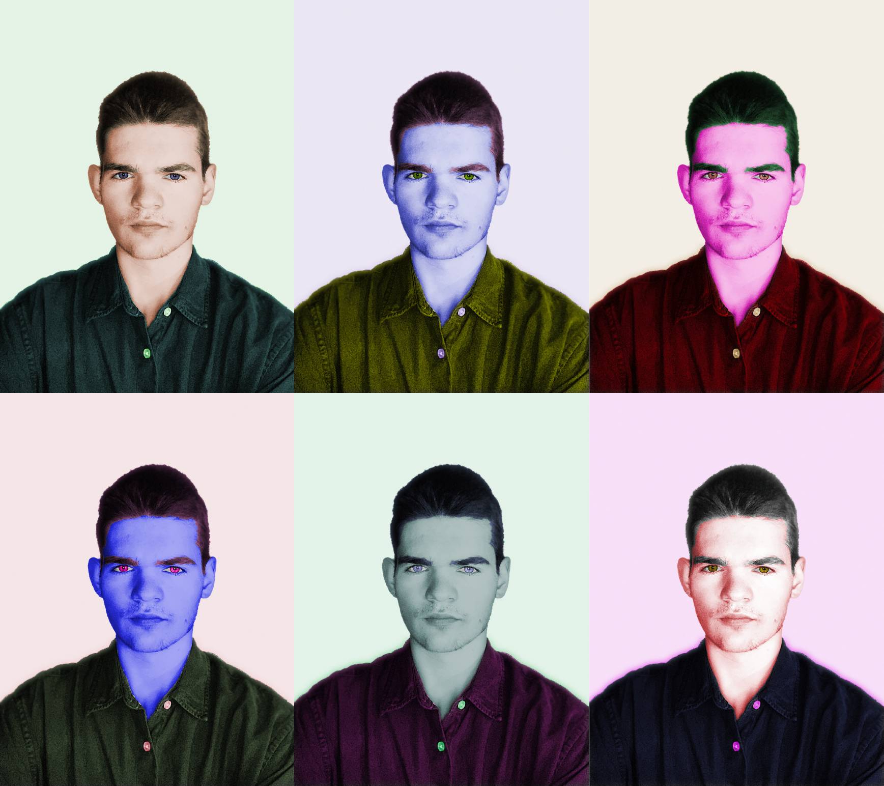U ovoj vježbi lijevo koristile su se tehnike koloriranja crno-bijele slike selekcijom željenih dijelova kolorizacije i apliciranjem boje na selekciju. Desno su moje vlastite fotografije koje sam uredio u stilu slike Andy-ja Warhola.
Vježba 7
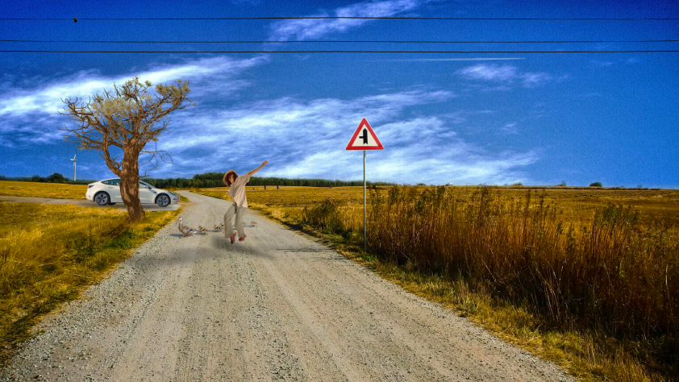U ovoj vježbi primjenjivao sam načine dodavanja elemenata u sliku da izgleda realistično. Kako bi se to postiglo, koristiti alate za izrezivanje i paziti na boju, sjene, svjetlost i perspektivu.
U sliku sam promjenio nebo i ubacio osobu, stablo, prometni znak, automobil, telegrafske žice i ptice.
Projektni zadatak 2
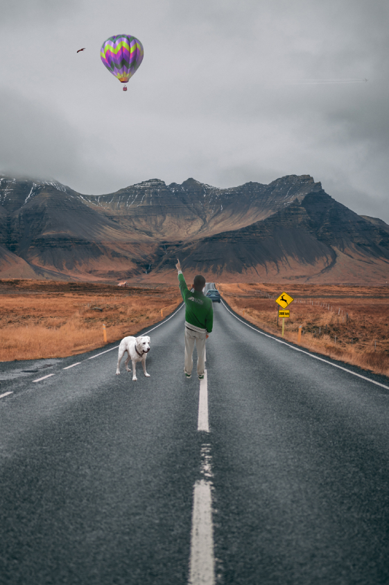Ovo je projektni zadatak piksel grafike u kojoj sam koristio sve tehnike koje sam koristio u prethodnim vježbama piksel grafike.
U pejaž ubacio sam sliku sebe, svojeg psa, automobil, prometni znak, balon na vrući zrak te orla, kuću i mlazni zrakoplov koji nisu uočljivi.
Video/web
Vježba 8


U ovoj vježbi koristio sam Photopea za izvoz slike, a Shotcut za obradu videozapisa. To je tzv. kinemagraf, video isječak čija sekvenca se ponavlja u beskonačnost.
Lijevo su svijeće, a desno pejzaž obale.
Vježba 9
 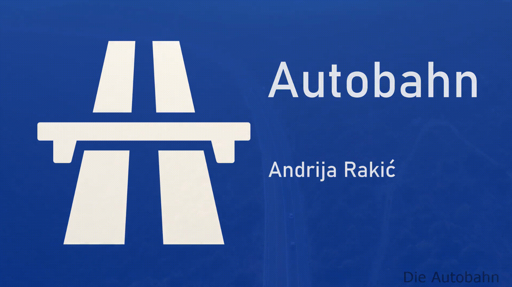
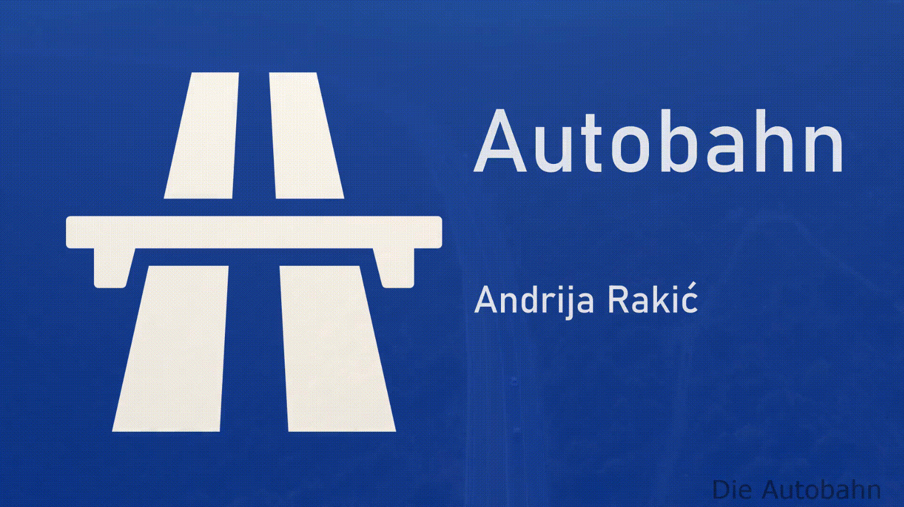
U ovoj vježbi koristio sam Shotcut za ubacivanje slika, video isječaka, teksta te primjenu efekata.
Lijevo je snimka biciklista, a desno reklama autoceste.